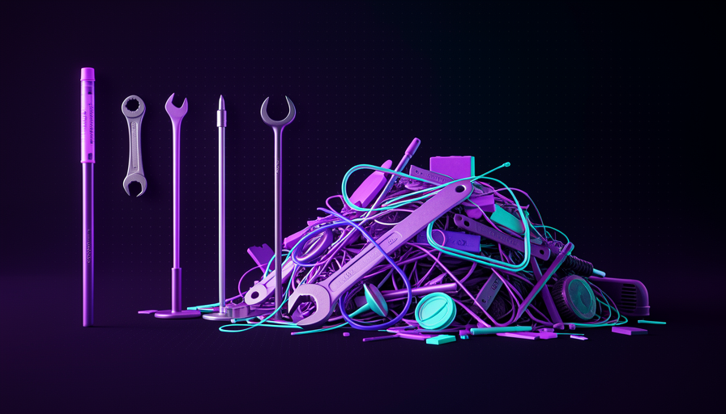

📖 Living glossary (read first — come back whenever you need to)
This module is about the cost for each skill. The terms below are new to this page—learn them (the basic vocabulary for model/agent/skill was introduced in Track 1):
true/false) in the skill’s frontmatter. When enabled, the model can no longer call the skill on its own — only you can. As a bonus, the description stops leaking.💧 The description leaks
🧠 Imagine it this way: imagine a bunch of keys in your pocket. Each key has a little label ("front door," "car," "closet"). You rarely use the closet key — but its label takes up space on the key ring all the time. Skill descriptions are exactly these labels: they’re always there, weighing on the context, even when you don’t open that door.
In module 3.1, you learned what a skill and that it has a frontmatter with a description. Now here’s the part almost nobody notices: in Matt Pocock’s words, "every skill leaks your" description in the context window". In other words: as soon as you install a skill, the phrase that describes it starts taking up space in the context window of the model—every turn, whether you’re using that skill or not.
Why does it leak? Because that’s how the model discovers that the skill exists. For it to decide “oh, I could use skill X for this task,” it needs to have read X’s description first. So the system injects all the descriptions at the very beginning. The why it matters: the context window is finite and measured in tokens; every leaked description means less room for what really matters (your code, your request). The common mistake is installing a skill “because it’s nice to have”—each one charges a silent toll, even when idle.
Each skill injects its description into the window. The more skills, the less room remains for the work that matters.
⚠️ Common beginner mistake
Think "an installed skill I don't use costs nothing." It does: the description leaks into the context on every turn. An unused skill ≠ a free skill.
In one sentence: every installed skill leaks its description into the context window — it charges a toll even when idle.
Going deeper (optional): why does the system need to leak the description?
The model doesn’t have a magical “skills menu” it can consult for free. It only knows what’s written in the context window at that moment. For it to decide “this task matches skill X,” the sentence describing X has to be visible to it before to decide. It's a trade-off: visibility (the model can choose on its own) costs context; hiding saves context but removes that automatic choice—which is exactly what the disable model invocation does (topic 3).
📚 100 skills, 100 descriptions
🧠 Imagine it this way: a worktable. One ruler on it? Fine. But 100 rulers, 100 pens, 100 manuals piled up—you can’t even see where the paper you need to write on is anymore. The clutter doesn’t help; it gets in your way. Too many visible skills do that to the model’s mind.
A skill leaks very little — maybe one or two sentences. “So what’s the problem?” you ask. The problem is the multiplication. As Pocock puts it plainly: "100 skills = 100 descriptions in context". Add that to your CLAUDE.md, open files, and conversation history — and suddenly a good part of the window has already been used up even before before the model starts thinking about your task.
This ties directly to the concept of context bloat. When the window fills up, two bad effects show up: it gets more expensive (you pay for tokens) and it becomes more dumb — with too many things competing for attention, the model “gets lost” and reasons worse about what actually matters. The common mistake here is the collector mindset: “I installed 80 skills from the repository, so now I’m productive.” In practice, you’ve just filled your desk with rulers. Fewer skills visible usually pays off more.
Quick recall: why are 100 installed skills a problem, even if you only use 2 per day?
In one sentence: 100 skills = 100 leaked descriptions; the cost isn't per skill, it's the sum.
🙈 disable model invocation
🧠 Imagine it this way: a tool in your workshop that only you knows how to use it. You take its label off and put it in a drawer. The apprentice (the model) doesn’t even know it exists — so it doesn’t try to grab it, and its label no longer takes up space on the workbench. When you need it, you open the drawer and use it. That’s exactly what disable model invocation.
Here's the button that solves the problem from topics 1 and 2. The skill's frontmatter has the key disable-model-invocation: true. When you turn it on, two things happen, in Pocock’s words: "only the user invokes [the skill], and the description DOESN'T leak". In plain English: (1) the model can no longer call that skill on its own—it becomes a procedure pure, triggered only by you; and (2) because the model no longer needs to "know" about the skill to decide to use it, the description stops leaking in context. You get that space back.
The example Pocock gives is the skill "engineering zoom out": it’s one of its procedures, which it invokes whenever it wants; it doesn’t make sense for the model to decide to use it on its own, so it hides it with disable-model-invocation: true. O reason is straightforward: you trade the “convenience” of letting the model choose the skill automatically for cleaner context — and, for procedures, you were going to trigger the skill manually anyway. The common mistake is connecting this to a ability (a skill whose value lies in the model pulling it in on its own, like "coding standards"): then you break exactly what made it useful.
--- name: engineering-zoom-out description: Sai do detalhe e reavalia a arquitetura geral antes de continuar. # Esconde a skill do modelo: SO o humano invoca (/engineering-zoom-out). # Efeito colateral bom: a description acima NAO vaza na janela de contexto. disable-model-invocation: true --- # Engineering zoom out Quando eu te chamar, pare de mexer no codigo linha a linha e: 1. Resuma em 3 bullets o que o sistema faz hoje. 2. Aponte a decisao de arquitetura mais arriscada em aberto. 3. Liste 2 caminhos possiveis (trade-offs) e recomende um. So depois que eu aprovar, volte a escrever codigo.
Quick recall: what disable-model-invocation: true does it?
In one sentence: disable-model-invocation: true hides the model’s skill (only you call it) and stops the description from leaking.
🧠 Knowledge in the human
🧠 Imagine it this way: a chef who knows the menu by heart. They don't stick a post-it for each recipe on the restaurant fridge (for everyone to see) — they knows when to pull each dish. The knowledge lives in its head, not scattered around the kitchen. That’s what Pocock does with skills: the knowledge of “when to use” them stays in the skill, not leaked to the model.
Hiding descriptions isn’t just a technical cost-saving measure — it’s a control philosophy. Pocock says explicitly: he "hides most of the AI's descriptions and keeps the knowledge with the human". His sentence that sums it all up: "I know my skills, I don't want to delegate my thinking" — I know my skills; I don't want to delegate my thinking. He's the one who decides which procedure to run, not the model.
That’s why Pocock prefers procedures over abilities (you saw both types in 3.1): you want to be in the driver's seat. Here's an interesting difference in approach—the project Superpowers ("Work") prefers the opposite: let the model in control, choosing skills on its own. Neither is "wrong"; they’re different bets. The common mistake for beginners is to blindly copy someone else’s setup without realizing it embodies a philosophy. Ask yourself: Do I want AI to choose for me, or do I want to choose? The answer changes which skills you hide.
🎛️ Human in control (Pocock)
- • Prefer procedures — you invoke it.
- • Hide most descriptions.
- • “I don’t want to delegate my thinking.”
- • Context stays clear of bonus clutter.
🤖 Model in control (Superpowers)
- • Prefer abilities — the model chooses.
- • Visible descriptions (you need to see them).
- • Delegate more decisions to AI.
- • Pay for more context in return.
The human knows and decides; hides the descriptions (doesn’t delegate the thinking). The model only executes—clean context.
In one sentence: hiding skills keeps the thinking with the human — "I don't want to delegate my thinking".
✂️ Lean skills
🧠 Imagine it this way: a backpack for a hike. Every gram counts. You don’t bring “everything that might be useful”; you bring only the essentials, and they have to be lightweight. A lean skill is like that: it does one thing, with the shortest possible description so it can be found, and no dead weight.
If the description leaks and every word costs, the practical conclusion is: write lean skills. This has two sides. First, the short description: it only needs to be detailed enough for the model (or you) to know when the skill applies—long sentences just add to the leakage. The grill-me that you’ll see later is praised as “unreasonably effective” in just 4–5 sentences: power isn’t size.
Second face: avoid instruction bloat inside the skill body. Here’s Pocock’s central warning about context— "everyone bloats their context window with too much stuff". A lean skill makes a very; if it’s turning into a monster with ten responsibilities, break it into smaller, chainable skills (like grill-me → two-PRD → to-issues, which you see in 3.6). The common mistake is treating the skill as a "dumping ground for everything I know about the subject." A skill isn’t a wiki; it’s a sharp procedure.

In one sentence: a good skill does one thing with the shortest possible description — power isn't about size.
🔍 Audit what leaks
🧠 Imagine it this way: cleaning out a drawer. You pick up each item and ask: “Do I use this? Does the model need to see this? Or should I put it in the bottom drawer?” Auditing your skills is the same kind of cleanup—periodic, one decision at a time.
Wrapping up the module: turn all this into a habit. From time to time, do a context audit of your skills. The rule of thumb is the one from engineering zoom out: if it’s a procedure (you always invoke manually), hide it with disable-model-invocation: true and recover the context; if it’s a ability real value (the model needs to find it on its own), make it visible—but then write a concise description. The common mistake is never reviewing: you install, forget, and six months later have 60 descriptions leaking without remembering half of them.
Use the checklist below to clean up your skills. It applies, in order, everything we’ve covered: identify what leaks, decide what should become a skill, and measure the result. Copy it into your project.
FAXINA DE SKILLS - toda skill instalada vaza sua description.
Para CADA skill, decida:
[ ] EU USO? Se nao uso ha semanas -> desinstale (para de vazar de vez).
[ ] PROCEDURE (eu sempre invoco na mao)? -> disable-model-invocation: true
(esconde do modelo + a description deixa de vazar)
[ ] ABILITY (o modelo precisa achar sozinho, ex.: coding standards)?
-> deixe visivel, MAS encurte a description ao minimo necessario.
[ ] DESCRIPTION enxuta? Corte tudo que nao ajuda a decidir "quando usar".
[ ] CORPO enxuto? 1 skill = 1 coisa. Monstro de 10 responsabilidades? quebre.
Meta: menos descriptions vazadas = mais janela pro raciocinio (e mais barato).
🔬 Worked example: the overloaded developer’s cleanup
Ana installed 40 skills from a popular repository. Responses started getting slow and expensive. She runs the audit:
- Identify the leak: 40 skills = 40 descriptions in the window every turn. Much of the context is used up before you even type.
- Uninstall the dead one: 22 skills it has never used → remove. 22 descriptions stop leaking.
- Hides the procedures: 12 are procedures she always runs manually (like "engineering zoom out") →
disable-model-invocation: true. They disappear from the context but keep working through/comando. - Keep the good abilities: 6 real abilities remain (e.g., "coding standards" that the model pulls in when writing React) → they stay visible, but it shortens the descriptions.
Result: 40 descriptions leaking down to 6. A lighter window → faster, cheaper responses, and the model reasons better about the actual task. Same model, better harness.
In one sentence: audit your skills like you're cleaning house—uninstall the dead ones, hide the procedures, and shorten the rest.
🧾 Module Summary
Next module:
3.3 — The Teach skill inside: a skill with memory (stateful) that remembers what you’ve already learned.